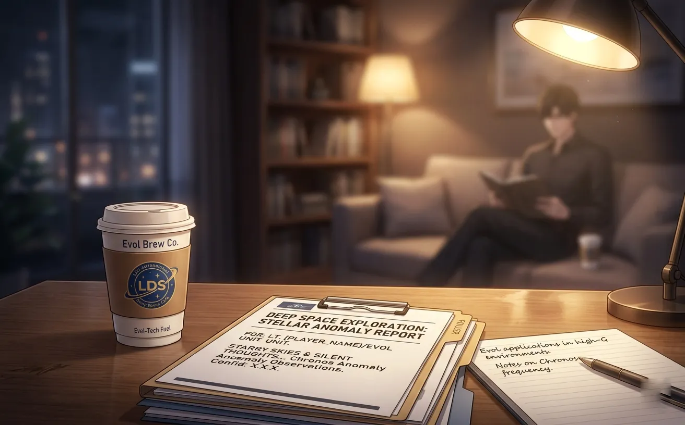
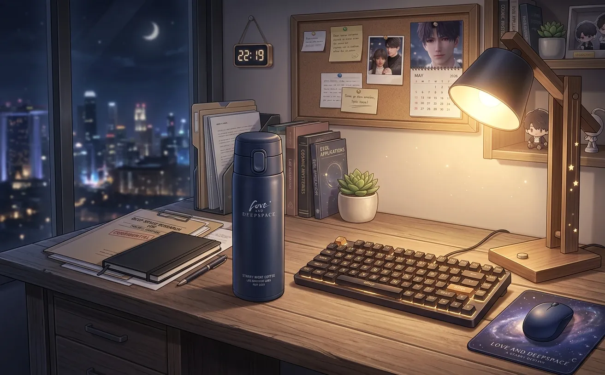
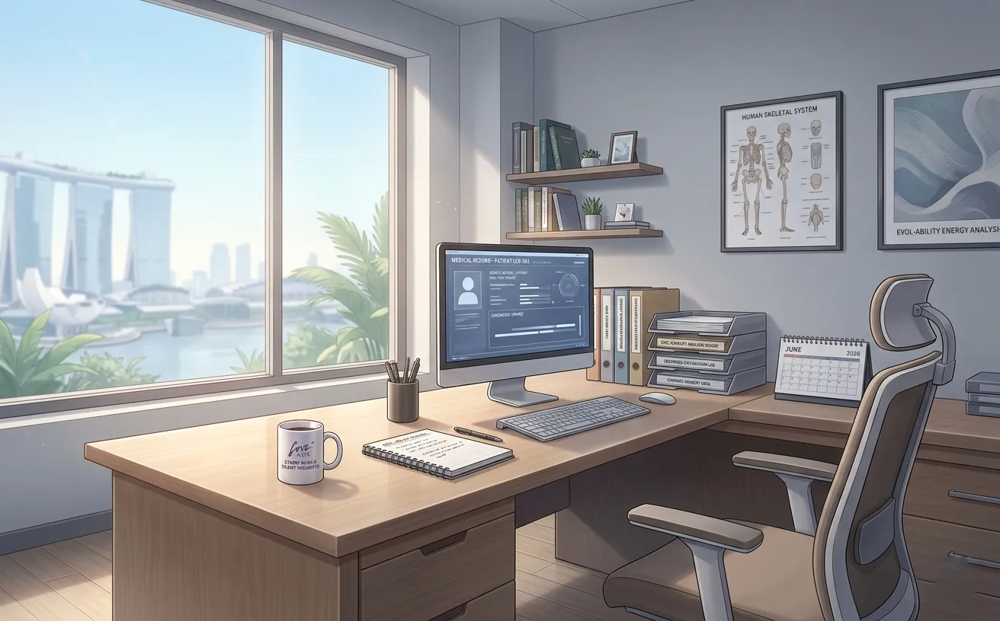
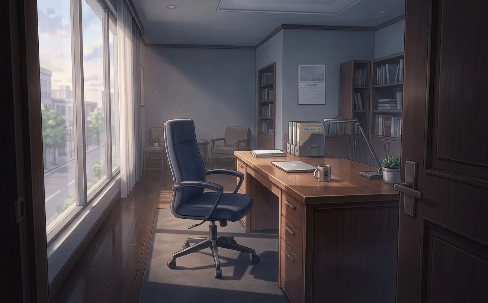
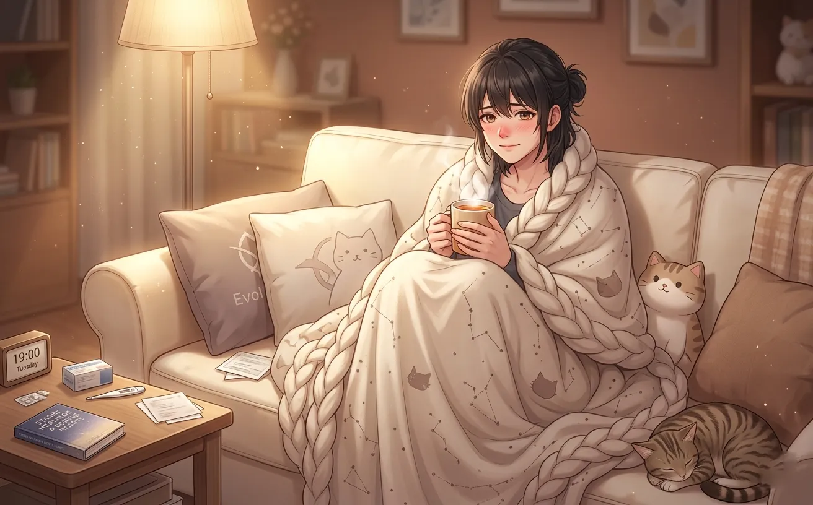
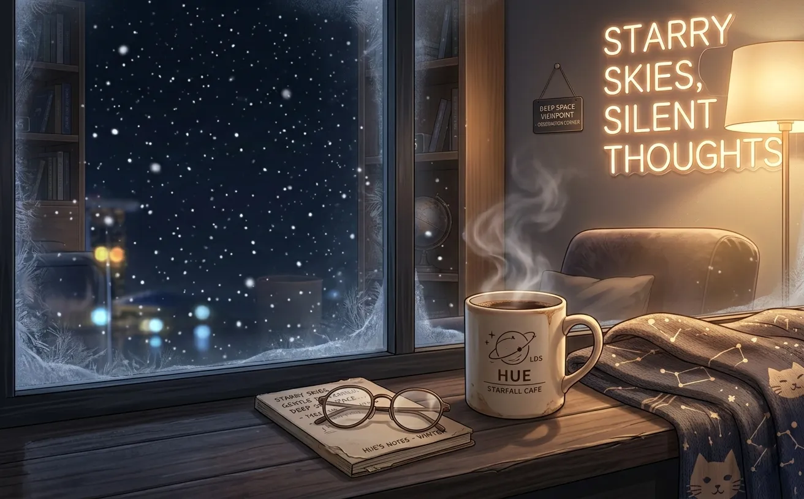
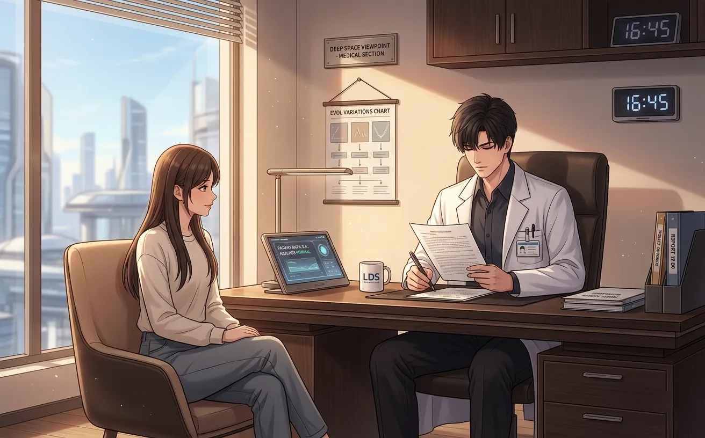

the snow melted three days later.
zayne stood by the window, looking at the wet pavement, the dirty slush, the gray sky. the storm was over. the quiet had settled.
he wondered if she would come back.
the coffee

she came back on a tuesday.
he was in his office, reviewing charts. the door was open. he heard footsteps. looked up. she was standing there, holding two paper cups.
"i brought coffee," she said.
he stared at her. "why?"
"because you looked like you needed it."
he didn't know what to say. so he said nothing.
she walked in. set a cup on his desk. sat in the chair across from him.
"it's not good coffee," she warned. "the machine at work is broken. this is from the gas station."
he took a sip. it was terrible.
"thank you," he said.
she smiled. small. satisfied. "i'll bring better coffee next time."
he didn't ask what made her think there would be a next time.
he didn't want to know.
the thermal bottle

she brought coffee again the next week. and the week after that.
the coffee got better. not great. but better.
then one day, she walked in without a cup.
"i got you something," she said.
she pulled a thermal bottle out of her bag. dark blue. simple. no logos.
"the coffee gets cold too fast," she explained. "this will keep it warm longer."
he took it. turned it over in his hands. "you didn't have to."
"i know."
he put it on his desk. right next to his keyboard. where he could see it.
he used it every day after that. the coffee stayed warm. he didn't know why that mattered so much.
but it did.
the routine

it became a routine.
tuesdays and thursdays. sometimes fridays. she would appear in his doorway, holding coffee, and sit in the chair across from his desk.
she didn't always talk. sometimes she read. sometimes she scrolled through her phone. sometimes she just sat there, watching him work.
he should have found it distracting. he didn't.
he didn't know what to say to that. so he said nothing.
but he started leaving his door open.
the day she didn't come

she didn't come on tuesday.
he told himself it didn't matter. she had no obligation. she was just someone who brought coffee. that was all.
he checked his phone. no messages. he put it down. picked it up again. put it down.
he worked late. the coffee in his thermal bottle was cold. he drank it anyway.
wednesday. nothing. thursday. nothing.
he was lying to himself. and he knew it.
the explanation

she came back on friday. she looked terrible.
her nose was red. her eyes were glassy. she was wrapped in a coat that looked too big for her.
"i was sick," she said. her voice was hoarse. "didn't want to give it to you."
he stood up. walked over to her. put his hand on her forehead. she was warm.
"you have a fever."
"i know."
"why are you here?"
she shrugged. "didn't want you to worry."
he didn't argue.
he wrote her a prescription. told her to rest. told her to drink fluids. told her to stay home.
"will you come check on me?" she asked.
"i'm a doctor. not a house call service."
"please?"
he sighed. "text me your address."
she smiled. then sneezed. he handed her a tissue.
she left. the room felt empty again. but different this time.
the house call

he went to her apartment that evening.
it was small. messy in a cozy way. books on the floor. dishes in the sink. a blanket draped over the couch.
she was wrapped in that blanket, looking smaller than usual.
"you came," she said.
"i said i would."
he checked her temperature. still warm. checked her pulse. a little fast. checked her throat. red.
"you'll be fine in a few days."
"you're not going to prescribe me anything?"
"rest. fluids. soup."
"i don't have soup."
"i know. i don't cook."
he left. came back twenty minutes later with groceries. made her soup. stood in her kitchen, stirring a pot, wearing his coat.
she watched him from the couch. "you're not what i expected."
"what did you expect?"
"i don't know. less... human."
he didn't know if that was a compliment. he decided it was.
the confession that wasn't

she was almost asleep. the soup was gone. the medicine had kicked in. her eyes were closing.
"zayne," she murmured.
"yes."
"why do you keep letting me come to your office?"
he didn't have an answer. not one he could say out loud.
"you bring coffee," he said.
"that's not why."
he was quiet. so was she.
he wanted to say more. wanted to say that his office felt empty when she wasn't there. that he looked forward to tuesdays now. that he had started leaving his door open even when she wasn't coming.
he didn't say any of it.
he just sat there. watching her sleep. like he had done once before, in a hospital waiting room, during a snowstorm.
some things didn't change.
the snow again

it snowed again in february.
he was in his office. the door was open. the thermal bottle was full. the coffee was warm.
she arrived late, brushing snow off her coat. "sorry. the roads are bad."
"you shouldn't have come."
"i wanted to."
she sat in her chair. took out her phone. started scrolling.
he looked at her. at the snow outside. at the thermal bottle on his desk.
a lot had changed since that first snowy night. he had changed.
she looked up. "that was months ago."
"i know."
"you remember that?"
"i remember everything."
she stared at him. he stared back. neither of them spoke.
then she smiled. soft. warm. "me too."
the thing he never said

he never told her why he kept the thermal bottle on his desk.
never told her that he smiled every time he saw it.
never told her that he started looking forward to tuesdays.
never told her that his office felt empty when she wasn't there.
never told her that he had started leaving his door open on purpose.
never told her that he thought about her when she wasn't there.
never told her that the first snowy night was the best night of his year.
never told her that he loved her.
she didn't need him to say it.
she saw it in the coffee he drank even when it was cold. in the way he looked at her when he thought she wasn't watching. in the thermal bottle on his desk, right next to his keyboard, where he could see it every day.
he never said it.
but she stayed anyway.